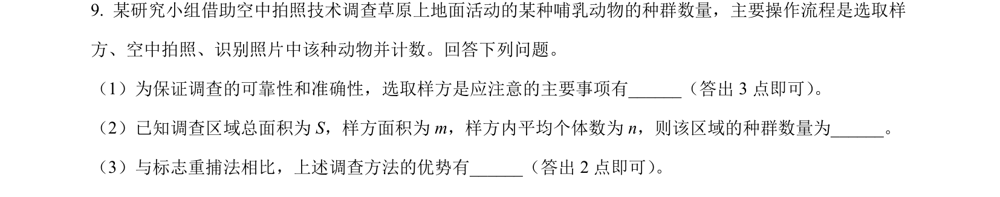
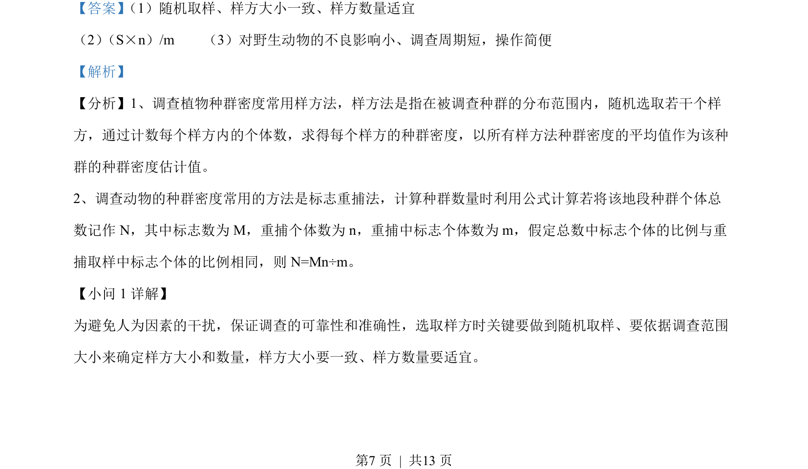
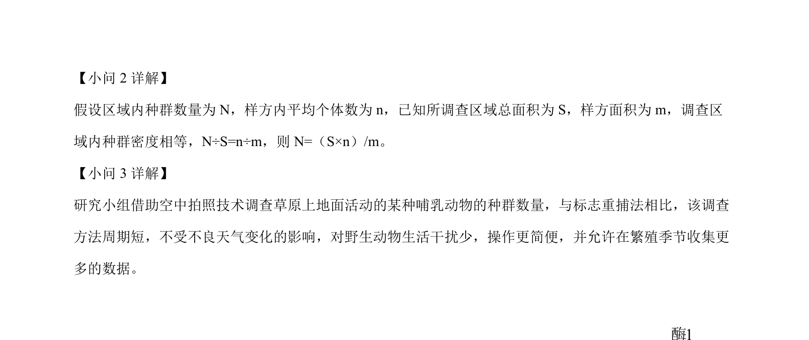

考点：种群密度 样方法 标志重捕法 种群数量调查

利用空中拍照和样方法调查草原哺乳动物种群数量，考查样方选取要点、种群密度估算公式及与标志重捕法的比较。


📄 原 PDF 第 7 页：
素材/真题/吉林/2008-2024·（吉林）生物高考真题/2022年高考生物试卷（全国乙卷）（解析卷）.pdf
【答案】 （1）随机取样、样方大小一致、样方数量适宜
（2） （S×n）/m （3）对野生动物的不良影响小、调查周期短，操作简便
【解析】
【分析】1、调查植物种群密度常用样方法，样方法是指在被调查种群的分布范围内，随机选取若干个样
方，通过计数每个样方内的个体数，求得每个样方的种群密度，以所有样方法种群密度的平均值作为该种
群的种群密度估计值。
2、调查动物的种群密度常用的方法是标志重捕法，计算种群数量时利用公式计算若将该地段种群个体总
数记作 N，其中标志数为 M，重捕个体数为 n，重捕中标志个体数为 m，假定总数中标志个体的比例与重
捕取样中标志个体的比例相同，则 N=Mn÷m。
【小问 1 详解】
为避免人为因素的干扰，保证调查的可靠性和准确性，选取样方时关键要做到随机取样、要依据调查范围
大小来确定样方大小和数量，样方大小要一致、样方数量要适宜。